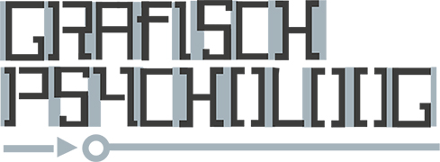
1. Wat is de rol van psychologie in grafisch ontwerp?
In de wereld van kunst en ontwerp speelt de perceptie van mensen een belangrijke rol. Een ontwerper of kunstenaar speelt met de perceptie van mensen en heeft altijd een zekere vorm van invloed op mensen. Omdat het grootste deel van ons denken op niet-technisch gebied met de perceptie bestreken wordt, heeft begrip van de perceptie veel praktische waarde voor ontwerpers en kunstenaars. Zelf ben ik vooral geïnterpreteerd in de vraag over hoe het brein tot interpretaties van de omgeving komt en welke regels het daarbij hanteert. Om hier een antwoord op te vinden, is ten eerste de definitie van het begrip ‘perceptie’ relevant.
De definitie van ‘perceptie’ Volgens Prisma Etymologisch woorden-boek: perceptie [inning, waarneming] {1603} < frans perception < latijn perceptionem, 4e nv. van perceptio [het inzamelen, begrip, inzicht], van percipere [geheel in bezit nemen, ontvangen, waarnemen, begrijpen], van per [door … heen] + capere (in samenstellingen -cipere) [nemen].
Perceptie betekent waarneming. De betekenis van het woord ‘waarneming’ kan onderverdeeld worden in alles dat men ziet, hoort, proeft, ruikt en voelt. Perceptie lijkt volgens het woordenboek iets vaags, subjectiefs en veranderlijks, iets dat we eigenlijk nooit goed begrepen hebben. De definitie door psycholoog Peter Gray is voor mij een stuk duidelijker. Peter Gray maakt het onderscheid tussen waarneming en gewaarwording, deze twee begrippen zijn allebei onderdeel van het begrip perceptie. Wanneer iets uit de omgeving door middel van de zintuigen wordt opgenomen en vertaald wordt naar zenuwimpulsen die door de hersenen verwerkt kunnen worden, spreken we van gewaarwording. Van waarneming is pas sprake als een gewaarwording geïnterpreteerd en begrepen wordt.
Het begrip perceptie kan dus gedefinieerd worden als het stadium in het denken waarin betekenis wordt toegekend aan gewaarwordingen. Het is de taak van perceptie om input aan de omgeving te onttrekken en die te organiseren tot stabiele, betekenisvolle informatie. Deze informatie is datgene dat uiteindelijk wordt waargenomen en hoeft niet overeen te komen met de werkelijkheid.
§1.1 het perceptieproces
Bij het vormen van percepten bestaan er drie fases: Ten eerste moet er een selectie worden gemaakt uit de enorme hoeveelheid informatie waarmee de hersenen geconfronteerd worden. Vervolgens moet deze informatie georganiseerd worden en tot slot interpreteren de hersenen de informatie.
Hypothesefase: Selectie
In de eerste stap van het perceptieproces wordt binnenkomende informatie geselecteerd. Bij het ontvangen van informatie van buitenaf is de capaciteit van onze hersenen beperkt. Mensen worden blootgesteld aan meer stimuli dan ze kunnen verwerken, waardoor het brein er onbewust op is ingesteld om dingen te filteren. Selectie van media vindt deels plaats als gevolg van beperkte aandacht en geheugencapaciteit en deels als bewuste activiteit van ontvangers. Mensen zijn als het ware zuinig met hun aandacht: ze kiezen uit de prikkels om te vermijden dat ze overweldigd worden door informatie.
De selectie die mensen maken, hangt samen met ervaring en kennis over bepaalde dingen en ook behoeften spelen een grote rol. Als mensen bijvoorbeeld hongerig zijn, zijn ze gevoeliger voor advertenties m.b.t. consumptiemiddelen. De rest van de binnenkomende informatie wordt in dit geval buiten beschouwing gelaten. Mensen kunnen daarom niet altijd objectief en bewust informatie selecteren.
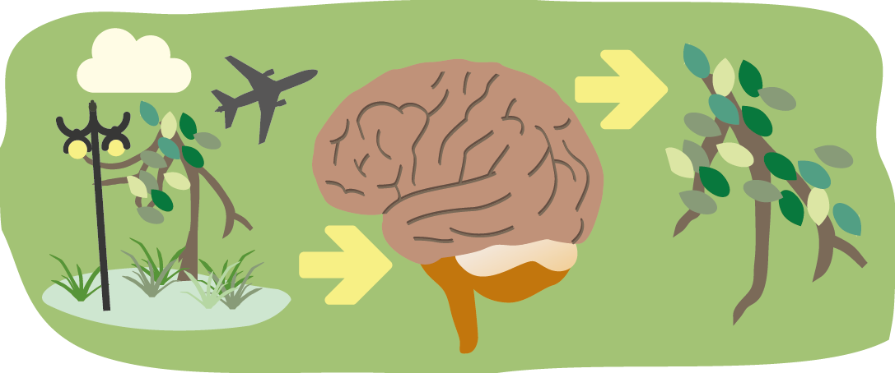
Informatiefase: organisatie
Er is een systeem in onze hersenen dat inkomende informatie organiseert, psychologen benoemen dit als de gestalttheorie. Als mensen naar een gebouw kijken, focussen ze zich niet op de duizenden mogelijke individuele onderdelen, maar op het geheel: een gebouw. De vaardigheid van de hersenen om te focussen op het geheel is aangeleerd, mensen wijken er moeilijk vanaf. Het op zijn kop houden van een foto bijvoorbeeld, is een truc om je te focussen op individuele componenten in plaats van het universele concept van het object van de foto.
Aangeleerde denkpatronen en universele concepten kunnen over de wereld behoorlijk verschillen. Dit is aangetoond door Liang-Hwang Chiu, een professor in educatieve psychologie , die in 1972 aan kinderen in China en Amerika drie afbeeldingen heeft voorgelegd en hen gevraagd welk plaatje er niet bij hoort.
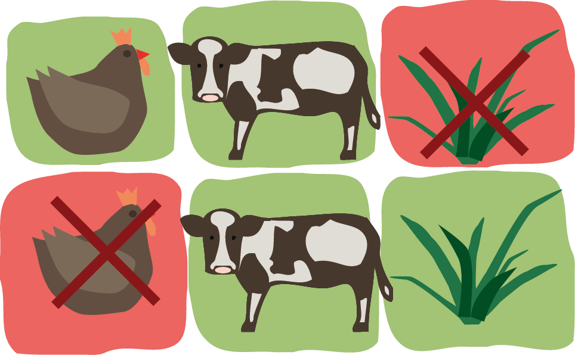
Welke drie objecten worden door deze kinderen bij elkaar geplaatst, de kip en het gras, de kip en de koe, of de koe en het gras? Amerikaanse kinderen groepeerden de objecten op basis van groep, namelijk ‘dieren.’ De Chinese kinderen groepeerden de objecten juist op basis van relaties onderling, zo kozen zij voor de combinatie van de koe en het gras, omdat ’de koe gras eet.’
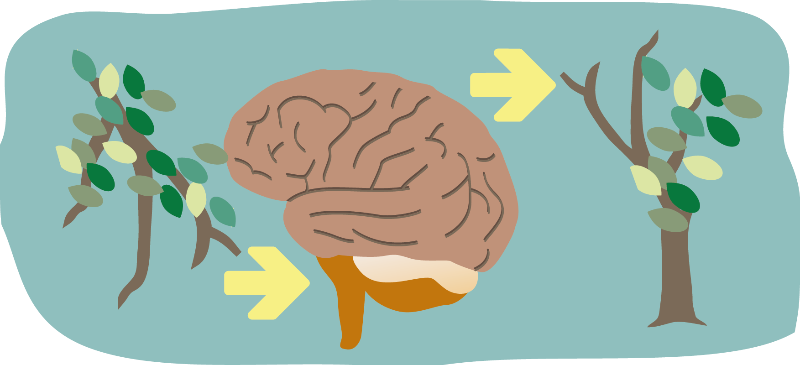
Confirmatiefase: Interpretatie
Na het organiseren van inkomende informatie kan de binnenkomende informatie geïnterpreteerd worden. De oordelen die mensen uiteindelijk in de derde stap vormen, zijn bijna helemaal afhankelijk van de normen en waarden die mensen mee hebben gekregen door onze culturele achtergrond. Wanneer mensen een boodschap uit bijvoorbeeld een reclamemiddel proberen te duiden, interpreteren ze deze in het licht van een associatie met de prikkel. De interpretatie van inkomende informatie hangt sterk af van de cultuur waarmee het individu verbonden is.
De wijze waarop informatie in de hersenen verwerkt wordt, hangt af van selectie, organisatie en interpretatie. Het volgende deel gaat over het proces van perceptie vanuit verschillende invalshoeken.
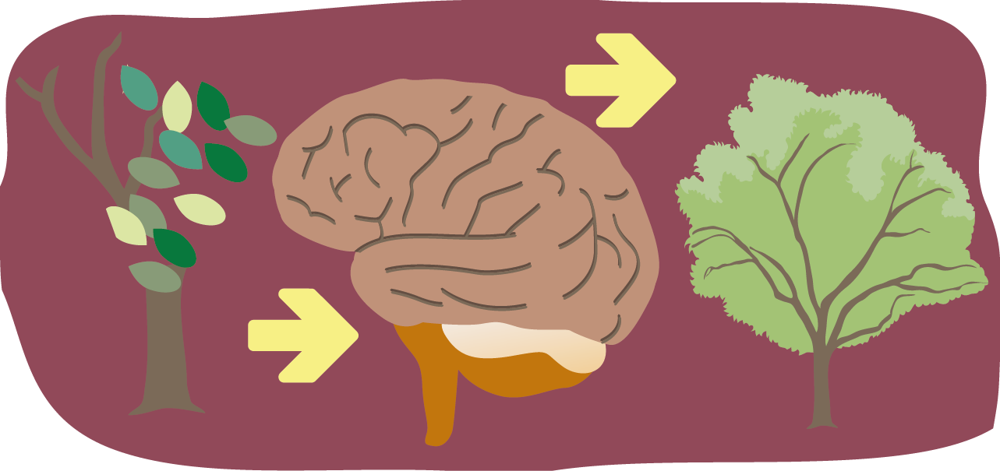
§1.2. Perceptie, gebaseerd op
aangeleerde denkprocessen
We zouden er van uit kunnen gaan dat de mens bij de geboorte nog helemaal geen aanleg heeft voor het vormen van percepten. In dat geval zou de perceptie van de mens door de omgeving en opgedane ervaringen worden bepaald. We hebben hier in wezen te maken met een eeuwenoude filosofische vraagstelling. Is de waarnemer in aanleg een onbeschreven blad waarop de natuur haar tekens aanbrengt, is perceptie dus aangeleerd? Of ordenen we juist de signalen die we uit de wereld opvangen volgens ingebouwde regels en is perceptie in dat geval dan toch aangeboren? Deze twee theorieën zullen beide behandeld worden.
Theorie van op leren gebaseerde inferentie
Om percepten te vormen koppelen mensen zintuiglijke informatie aan eerder opgeslagen informatie in het geheugen. In 1866 deed Hermann von Helmholtz hier onderzoek naar en wees erop dat leren door ervaring een belangrijke rol speelt in de perceptie. Zijn theorie van de op leren gebaseerde inferentie stelt dat een waarnemer bepaalde inferenties (logische vermoedens) heeft over wat waargenomen dingen zouden kunnen betekenen.
Onze perceptuele interpretaties zijn in feite hypotheses over waargenomen dingen. Om een object als boom te kunnen benoemen, moeten de hersenen vaststellen dat het van hout is, eventuele takken en blaadjes heeft, want dat zijn de kenmerken van het concept ‘boom’, zoals het in onze hersenen is opgeslagen. Om tot dit soort inzichten te komen is objectgerelateerde kennis nodig, die afkomstig is uit het eigen geheugen.
Cognitieve consistente theorieën
De belangrijkste taak van de hersenen is om de perceptie van voorwerpen constant te houden, ondanks voortdurende veranderingen (zoals bewegings-, positie-, of kleurverschil) Als dit lukt spreken we van perceptuele constantie. Al deze constanties bij elkaar helpen ons bij om dingen te blijven herkennen in een steeds veranderende wereld.
Om tot perceptuele constantie te komen zal het waarnemings-systeem proberen een interpretatie te maken van een voorwerp op basis van aannames over hoe de omgeving in elkaar zit.
Het is aannemelijk dat de hersenen een voorkeur hebben voor informatie die overeenkomt met al bestaande ideeën. Omgekeerd negeren mensen liever informatie die strijdig is met bestaande opvattingen. Dit gegeven staat centraal in de cognitieve consistente theorieën van Festinger, waarvan de bekendste de cognitieve dissonantie theorie is. Deze theorie houdt in dat mensen streven naar consistentie: elke situatie die tot inconsistentie leidt, veroorzaakt een gevoel van interne spanning die mensen ertoe motiveert de inconsistentie weer op te heffen. Van consistentie is sprake als twee opvattingen met elkaar in overeenstemming zijn. Als hiervan geen sprake is, hebben we het over dissonantie. Onze hersenen zijn altijd geneigd om dissonantie te mijden. Waarneming lijkt nooit puur: eerdere ervaringen sturen de interpretatie.
De rol van context en verwachtingen
Als een individu bij het interpreteren van informatie in een bepaalde situatie eenmaal een context heeft vastgelegd, vormt hij of zij bepaalde verwachtingen over personen, voorwerpen en gebeurtenissen die wellicht ervaren zullen worden. Hier is onderzoek naar gedaan in 1955. In het figuur hier onder leest men o.a. ‘The Cat’ maar objectief gezien zijn de letters ‘A’ en ‘H’ exact hetzelfde. Desondanks wordt de A waargenomen als een H en de H soms als een A. Dit komt doordat in dit geval de perceptie wordt beïnvloed door wat je weet over taal. Een soortgelijke reactie zullen mensen ondervinden als ze naar het beeld met cijfers en getallen zullen kijken in het figuur hieronder boven naar beneden is ‘A, B, C’ het makkelijkst leesbaar, tewijl diezelfde ’B’ bij het lezen van links naar rechts, waargenomen wordt als een ‘13’
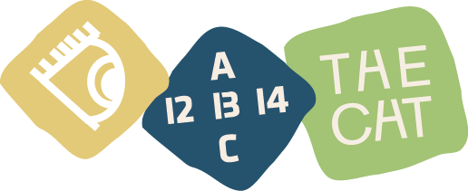
Een andere manier waarop context en verwachtingen je perceptie beïnvloeden is door gepredispositioneerd te zijn. Perceptuele predispositie zorgt ervoor dat je een stimulus omzet in de stimulus die je verwachtte. Om zelf te ervaren hoe perceptuele predispositie in zijn werk gaat, moet je de twee reeksen woorden hieronder eens snel doorlezen. In het figuur hieronder hebben mensen de neiging om k??s aan het eind van de bovenste reeks anders te lezen dan de k??s aan het eind van de onderste reeks.
Door de betekenis van de woorden voorafgaand aan het beeld, ontstaat een bepaalde perceptuele predispositie die je ertoe brengt om k??s te lezen als Kaas. Voornamen vormen een andere perceptuele predispositie, waardoor je k??s leest als ‘Kees of ‘Koos’
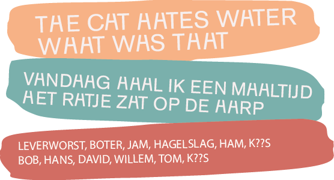
§1.3. Perceptie, gebaseerd op ingebouwde denkprocessen
In tegenstelling tot de gedachte dat perceptie gebaseerd wordt op aangeleerde denkprocessen, kunnen we er ook van uit gaan dat mensen aanleg hebben voor bepaalde cognitieve processen. In dit geval kan er gesteld worden dat de omgeving mensen alle informatie verstrekt die ze nodig hebben om de wereld gewaar te worden. Meer informatie (zoals herinneringen, ervaringen, voorkennis) hebben mensen nauwelijks nodig. Als het waar is dat de omgeving mensen alle benodigde informatie verstrekt om de wereld gewaar te worden, is het aannemelijk dat er collectieve principes zijn die mensen volgen bij het vormen van percepten.
Het lijkt zo te zijn dat de Hersenen beeldelementen omzetten in simpele, herkenbare vormen. Dit merk je als je naar de afbeelding hiernaast kijkt. Je zou jezelf de vraag kunnen stellen of je wel echt twee driehoeken waarneemt. In feite zijn er namelijk geen driehoeken. De hersenen creëren de vorm van een driehoek op basis van de lege ruimte binnen de cirkels, want dat is wat de hersenen verwachten te zien. Deze illusie is genoemd naar de Italiaanse psycholoog Kanizsa die deze illusie ontwikkelde in 1955. De afbeelding er naast suggereert dezelfde illusie, maar dan met een vierkant.
Na deze illusie bestudeerd te hebben, kan er vastgesteld worden dat de hersenen snelkoppelingen maken, om snel een interpretatie te kunnen vormen van wat een mens ziet in de wereld. Meestal werkt dit, maar het kan ook misleidend werken..
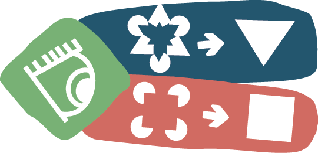
De Gestaltwetten van perceptuele ordening
Waarom ervaren mensen het ene als voorgrond en het andere als achtergrond. Hoe en waarom zien mensen de samenhang tussen voorwerpen? Welke eigenschappen zorgen ervoor dat mensen twee voorwerpen van elkaar kunnen onderscheiden? Dit zijn vragen die drie Duitse psychologen, Wertheimer, Koffka en Kohler zich al in de jaren twintig gesteld hebben. In deze tijd stonden de neurowetenschappen nog in de kinderschoenen en waren er geen MRI- of PET-scans. Onderzoek werd gedaan door proefpersonen te confronteren met reeksen eenvoudige geometrische figuren.
Vervolgens bracht men in enkele factoren een paar veranderingen aan en observeerde welke invloed dat had op de manier waarop mensen de structuur van de reeks waarnamen. Dit onderzoek leidde tot een serie gestaltewetten van perceptuele ordening. Beeldend kunstenaars en ontwerpers uit die tijd begonnen de gestaltpsychologie ook te onderzoeken om hun werk te verbeteren.
| De wet nabijheid Het principe van nabijheid stelt dat mensen visuele elementen bij elkaar voegen als ze zich bij elkaar in de buurt bevinden. Onze hersenen zijn geneigd om patronen te creëren, zelfs als er niet direct patronen waargenomen worden. |
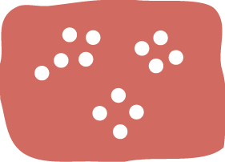 |
| 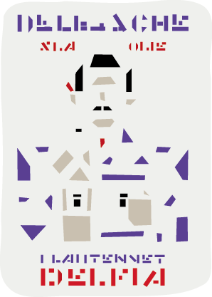 | Men interpreteert de witruimte, of het gebrek er aan als een patroon. Dit is te zien in het voorbeeld hiernaast me de stippen. In het ontwerp van Bart van der Leck nemen de hersenen een persoon waar in de losse driehoeken. |
| Wet van gelijkheid
Volgens Wertheimers wet van gelijkheid voegen mensen dingen samen die een gelijk uiterlijk hebben. In de illustratie hiernaast is te zien dat de wet van gelijkheid de wet van nabijheid overheerst. |
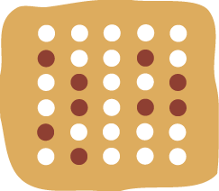 |
| 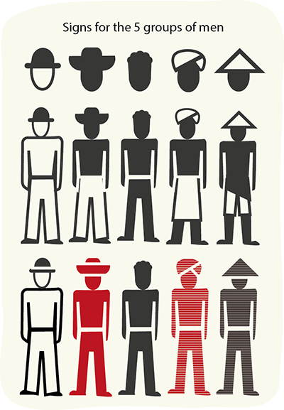 | Je zou namelijk de stippen kunnen groeperen op grond van de afstande ten opzichte van elkaar, maar de verleiding is groter om ze te groeperen op grond van de gelijke kleur. De wet van gelijkheid wordt onder andere toegepast bij infographics, zoals het Isotype systeem van Otto Neurath. |
| Bepaalde keuzes met betrekking tot kleurgebruik kunnen de leesbaarheid van een boodschap beïnvloeden, je kunt elementen ermee accentueren die een speciale betekenis hebben. | 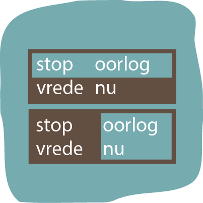 |
Hierboven een voorbeeld dat ik zelf bedacht heb. Het figuur laat zien hoe kleur ervoor kan zorgen dat de ene interpretatie meer aandacht trekt dan de andere.
| De Wet van geslotenheid Figuren zien wij het liefst als compleet, ook als deze niet compleet zijn. Onze hersenen zijn er op ingesteld om lege plekken in te vullen en proberen een incompleet figuur voor een compleet figuur aan te zien zonder dat hier fysische randen voor aanwezig zijn. |
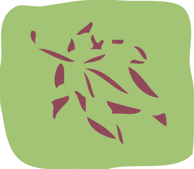 |
In het voorbeeld hiernaast zijn losse paarse vlekken te zien, die gezamenlijk als blad waar te nemen zijn. In het logo van het WWF is sprake van de wet van geslotenheid. |
| De wet van voor- en achtergrond Een van de meest fundamentele perceptuele processen die gestaltpsychologen hebben geïdentificeerd is het onderscheid tussen voor- en achtergrond. Vormen kunnen hierdoor op verschillende manieren geïnterpreteerd worden. |
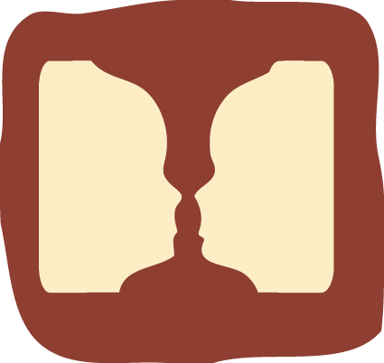 |
|
Het logo van fedEx bevat een pijl tussen de E en de X. Het is niet mogelijk om beide vormen tegelijkertijd waar te nemen. |

| Funamenteel aan alle andere principes: Wet van Pragnanz Gesaltpsychologen stellen dat elke vorm van perceptuele ordening een bewijs vormt voor het meer fundamentele idee dat onze perceptie wordt beïnvloed door in de hersenen verankerde patronen |
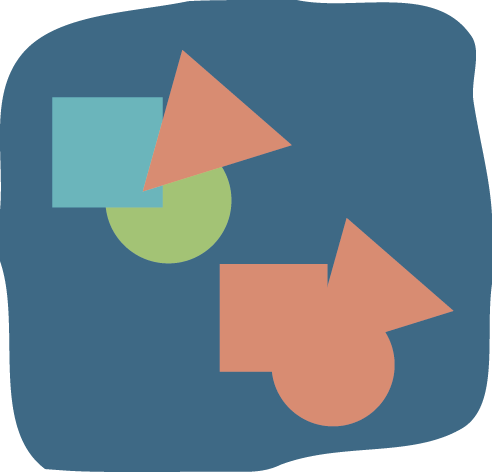 |
De wet van Pragnanz (‘pregnantie’), die stelt dus dat mensen bij voorkeur dingen in de eenvoudigste vorm waarnemen, het patroon dat ons de minste cognitieve inspanning kost.
§1.4. Perceptie, bewust versus onbewust.
Filosofen, sociologen en gedragseconomen wijzen ons er op dat het onderbewuste een grotere rol speelt in het maken van beslissingen dan we denken. Tot op zekere hoogte lijkt ons bewustzijn de baas, maar vaak lijkt het toch het onderbewuste dat in onze hersenen de dienst uit maakt..
Het automatische- en bewuste systeem
Wanneer mensen geconfronteerd worden met informatie, kunnen ze deze informatie, afhangend van de situatie met of zonder mentale inspanning verwerken. Het menselijk denken lijkt hierbij twee methoden te bevatten. Psycho-analyticus Sigmund Freud maakte al in 1899 een onderscheid tussen deze twee manieren van informatieverwerking, namelijk het bewuste en het onderbewuste. Naar deze twee manieren van informatieverwerking is veel onderzoek gedaan, er zijn verschillende visies over hoe deze systemen genoemd moeten worden.
Gedragseconoom Daniel Kahneman noemt deze systemen het automatische- en bewuste systeem. Hij maakt onderscheid tussen. ‘fast thinking’ (systeem 1) en ‘slow thinking’ (systeem 2). Als iemand de volgende tekst voorgelegd krijgt: ‘de hoofdstad van Frankrijk’, ‘overkomt’ deze persoon iets volgens Kahneman. De woordkeuze is hierbij erg bewust, want deze persoon doet zelf niets, is eigenlijk passief in deze situatie. Wat er dan wel gebeurt heeft te maken met gegevens die het geheugen aan deze persoon levert, deze gegevens worden opgeroepen door een bepaalde stimulus.Vrijwel direct komt ergens het woord ‘Parijs’ opborrelen. In andere gevallen wordt er een heel pakket aan ideeën en concepten op in ons hoofd aangeleverd bij confrontatie met een bepaald gegeven.
Dit soort automatische processen worden door Kahneman samengevat als het werk van systeem 1. Het werk van systeem 2 kost moeite, terwijl systeem 1 vanzelf inwerking kan worden gezet. Wanneer iemand de rekensom van 17x24 voorgelegd krijgt, weet diegene vrijwel direct dat het antwoord meer moet zijn dan 100 (werk van systeem 1) Maar om tot het echte antwoord te komen (408) is er mentale inspanning nodig. (werk van systeem 2) Systeem 1 kan je vergelijken met een snelle, maar impulsieve haas, en systeem 2 met een trage, maar kritische schildpad.
Samenvattend: Systeem 1 is werkt intuïtief, systeem 2 heeft te maken met logica. Volgens Kahneman is het logische systeem erg lui. Wat voor ons als ontwerpers interessant is, is het feit dat het meeste dat er gebeurt in onze hersenen gestuurd wordt door systeem 1, zonder aandacht, automatisch. In onze hersenen geldt de wet van het minste moeite.
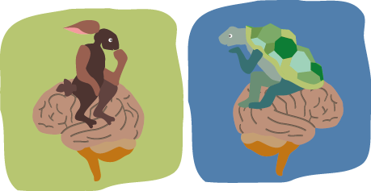
Hoogleraar psychologie Ab Dijksterhuis probeert aan te tonen hoe groot de invloed van het onbewuste denken is in ons leven. Wat het onbewuste volgens Dijksterhuis zoveel sterker maakt dan het bewuste is dat de verwerkingscapaciteit van het onbewuste ongeveer 200.000 keer zo groot als die van het bewustzijn.
Bij moeilijke beslissingen kan het bewustzijn de hoeveelheid informatie niet meer helder op een rij krijgen, zeker als er sprake is van veel informatie of grote tijdsdruk. Op dat moment is het onbewuste wel in staat om die informatie op te nemen en te verwerken, dit maakt het onbewuste machtiger dan we denken.
§1.5. De grafisch ontwerper als visueel psycholoog.
Perceptie is het punt waar wereld en geest elkaar ontmoeten: informatie komt binnen via onze ogen, die een reeks gebeurtenissen in ons zenuwstelsel in gang zetten, wat resulteert in interpretaties en denkbeelden. Zijn de resultaten van deze processen altijd betrouwbaar? Om deze vraag te beantwoorden, is het waardevol om te weten hoe de vorming van percepten (‘geestelijke’ beelden van het met hetgeen zojuist is waargenomen) precies werkt. Het proces van hetvormen van percepten bestaat uit drie fases: 1. De hypothesefase: binnenkomende informatie wordt geselecteerd, 2. De informatiefase: geselecteerde informatie wordt georganiseerd. 3. De confirmatiefase: de georganiseerde informatie wordt geïnterpreteerd.
Om door middel van grafisch ontwerp invloed uit te oefenen op mensen, kunnen ontwerpers een beroep doen op de opgedane kennis over psychologie. Uit de theorie van op leren gebaseerde inferentie blijkt dat onze interpretaties in feite hypotheses zijn over waargenomen dingen. In de praktijk betekent dit dat het mogelijk is om in te spelen op verwachtingen die mensen bewust- of onbewust zullen hebben bij het zien van bepaalde beelden.
Bij het inspelen op verwachtingen is het belangrijk dat een ontwerper in zekere zin de visuele normen en verwachtingen van het publiek kent. Kennis over de Gestaltwetten bewijst dat compositie een middel kan zijn om waarneming te beïnvloeden. Elementen moeten visuele relaties hebben, dit betekent dat ze bij elkaar staan, dezelfde grootte, dezelfde kleur, dezelfde richting of ritme bevatten.
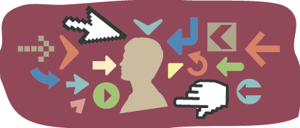
Deze kennis dwingt ontwerpers om na te denken over de vraag of alle onderdelen met gelijke eigenschappen wel echt wat met elkaar te maken hebben. Kennis over het onbewuste wijst ons op de kracht van het onbewuste bij het interpreteren van binnenkomende informatie. Zoals eerder gezegd geldt in de hersenen de wet van het minste moeite, dit inzicht leert ons o.a. dat we het gebruik van tekst moeten beperken. Het gebruik van zo weinig tekst als mogelijk, net genoeg om mensen in staat te stellen om het ontwerp te begrijpen, draagt bij aan het gemak waarmee een visuele boodschap te ontcijferen valt.